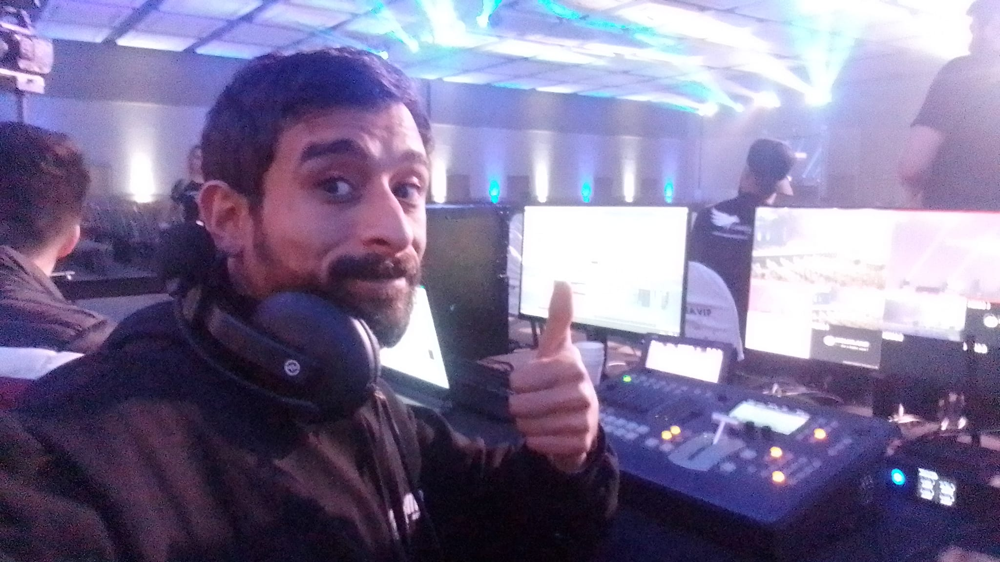

Brasileiro de 32 anos, residente de São Paulo/SP que sonha em ser programador.
Formado em publicidade desde 2014, porém desde então atuou como técnico de vídeo em eventos coorporativos, chegando até a posição de diretor de câmera.
Formado em inglês pela escola Centro Britânico, inglês aperfeiçoado em jogos, música e principalmente em conteúdos online.